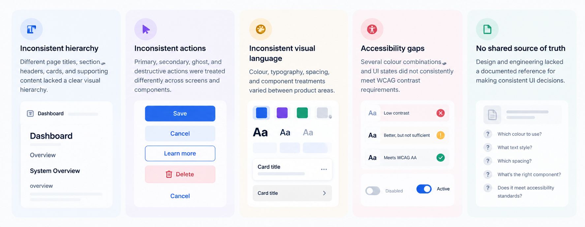

A foundation before the redesign
As the AI Command Center evolved, rapid product development had introduced inconsistencies across the interface—from hierarchy and interaction patterns to colour, typography, spacing, and accessibility.
Before redesigning individual screens, I focused on creating a reliable design foundation that could bring consistency and accessibility to the wider product.
Accumulated UX debt
The product had grown quickly, but the underlying UI patterns had not evolved at the same pace:

Three areas of investigation
I started by auditing the existing product rather than immediately redesigning individual screens.
A three-layer colour system
Rather than a flat list of hex values, colours were organised into three layers — each layer serving a different purpose:
Each semantic colour was mapped to four consistent roles across the interface: Text/Icon · Hover · Border · Light (background)
Creating a consistent visual language
Once colour relationships were established, I defined the structural rules that determine how information is presented across the product.
This produced 79 named typography styles — each attached to a product context, making it clear which style belonged where.
Testing against real usage
Contrast validation was not run against abstract colour pairs — it was run against actual UI usage patterns in the product:
All colour combinations were validated against both WCAG AA (minimum compliance) and WCAG AAA (enhanced compliance) requirements — with the results documented so both design and engineering could reference them without re-running tests.
A shared source of truth
01 — Consistent interface
Reduced product delivery time by 25% through reusable foundations, semantic tokens, and shared components.
02 — Accessible by foundation
Accessibility considerations were built into the design tokens and usage rules rather than handled screen by screen.
03 — Better design–engineering alignment
Created a documented reference that helped teams make decisions from the same set of rules.
04 — Scalable product foundation
Established reusable patterns that could support new dashboard features and future product areas.